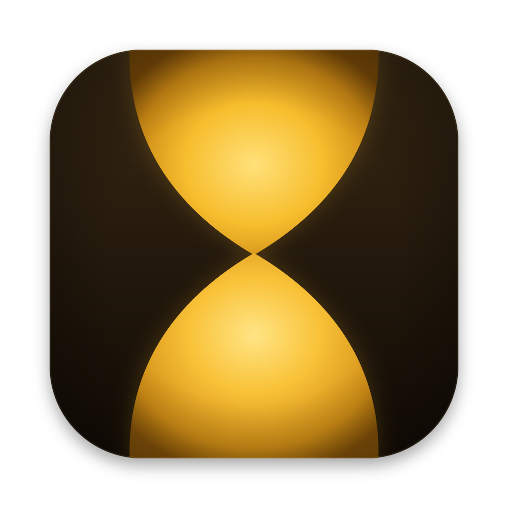

Idle Town Center
Watch your Age of Empires II recordings on Mac with a live stats overlay: resources, villagers, idle time and army for both players, plus a timeline you can jump around.
What you get
Live overlay
The resources, villager split, military pop and score for each player, at every moment of the match.
Idle time
Idle villagers and idle Town Center time, counted up as the game plays.
Timeline
Jump to any minute, then speed up, slow down or switch POV.
Library
Every Recording, searchable by player, civ and map, with villager graphs.
Getting started
- Install Age of Empires II: Definitive Edition from Steam (the Feral Mac version) and start Steam.
- Open the DMG and drag Idle Town Center to Applications.
- Open Idle Town Center, pick a Recording and click Watch in Age of Empires II.
Who made this, and why
hello. im maclean, and my tc is always idle and bad, so i built this tool to try and make it less bad. i hope this helps you to be less bad too!
It's free. Every Game update breaks it until I fix it, so if it's useful to you, a coffee keeps that going.
…or if there's a boo-boo, report a bug 🩹. Questions go to the same place: hello@idletown.center.
Questions
It says “This Age of Empires II build is not supported”
A Game update just came out. Every Game update needs a matching Idle Town Center update; it usually follows within a few days and installs itself. Your Game is untouched, and you can keep playing normally in the meantime.
A Recording is marked “Older version” or goes out of sync
The Game only replays Recordings from its own build exactly. Recordings made before the last Game update can drift. This is how the Game works and isn't something Idle Town Center can fix.
Does it change my game or work online?
Idle Town Center restarts the Game with its stats reader attached, only when you choose to watch a Recording. It never edits the Game's installed files. It does hide the Game's startup options window for that one launch, and puts your setting back afterwards. It has no part in online play. To play normally again, quit the Game and start it from Steam.
What data does it collect?
Anonymous usage counts only, such as "a Recording was watched" or "the Leaderboard was opened", so we can see what's used and what breaks. No names, no player or file names, no account. You can turn it off under Idle Town Center › Share Anonymous Usage Data.
Intel Macs?
Not supported. The Mac version of the Game runs on Apple silicon only.